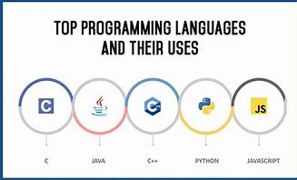

<!-- ეს არის პატარა საიტი სადაც არის ნაჩვენები პროგრამირების ენები -->
<body>
<h1>progrraming language's</h1>
<h1>pythone,<br>css,<br>html,<br>js</h1>
       <!--  -->
<p>ეს პროგრამირების ენებია ისინი არიან ძირითად პროგრამირების ენები უფრო გამოყენებადი არის pythone</p>
</body>

